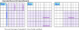
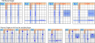
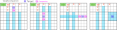
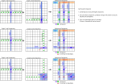

Franken/Mutant Exocet
Franken/Mutant Exocet extends the Exocet's CrossLine.A Target is placed on the extended CrossLine, which determines the SLine and Companion.
If the SLine is covered by two CoverLines, the Exocet Locked is established.
In the extended CrossLine, the term "Cross" seems unnatural,
but i will use the term CrossLine in accordance with the simple definition of Exocet.
Exocet Franken/Mutant(FM) sample
拡張 CrossLine
In a basic Exocet, CrossLine is defined using the following steps:
- Determine the position and direction of the Base.
- CrossBand-0 is determined from the Base position.
- Select CrossLine-n from CrossBand-n (n=1,2).
In Extended CrossLines, the position and direction of the Base, as well as the definition of CrossBand-0, are the same.
The Bands that form the basis of CrossLines are of three types: Cross-Band, Parallel-Band, and Block-Band. Two CrossLines, CrossLine-1 and CrossLine-2, are defined within different Bands.
In Extended CrossLines, multiple CrossLines may intersect. Due to the requirements for Exocet to be valid, cells where CrossLines intersect cannot contain Base candidate numbers.

The following figure shows an example of an extend CrossLine.
Target
Place two Targets on the three CrossLines, excluding the Escape area. (2 Targets / 3 CrossLines) One CrossLine has no Target.

Companion
Companions are defined by Row-type, Column-type, and Block-type CrossLines.
Sudoku cells are restricted by three houses: rows, columns, and blocks, so the shapes of Row/Column-type and Block-type cells are different.
There are also fixed Companions, and Companion candidates (cells marked with an ▲) that are determined by the relationship with other CrossLines.

The combination of the two Target-Companions determines the Companion for the current position of the Puzzle.

SLine
We focus on the CrossLine that includes the Target.
The CrossLine consists of the Target, Escape, SLine, and Companion.
The SLine is defined by the following formula:
SLine = CrossLine - (Target, Escape, Companion)
Exocet_FM_Single
Exocet Single can also be used with Franken/Mu (F/M) type CrossLine.
Exocet_FM_Single sample
Exocet_FM_Single sample
Exocet_FM_SingleBase
SingleBase finds more solutions than other Exocet algorithms. The same is true for the Franken/Mutant (F/M) type, which yields many solutions.
Exocet_FM_Single sample
Exocet_FM_Single sample